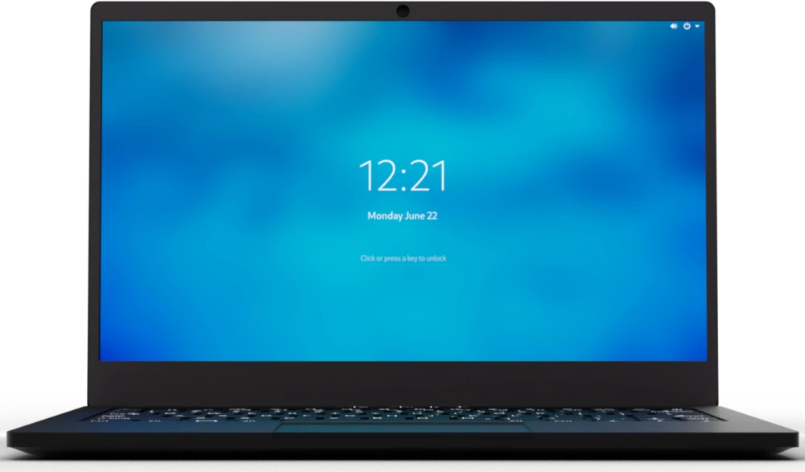
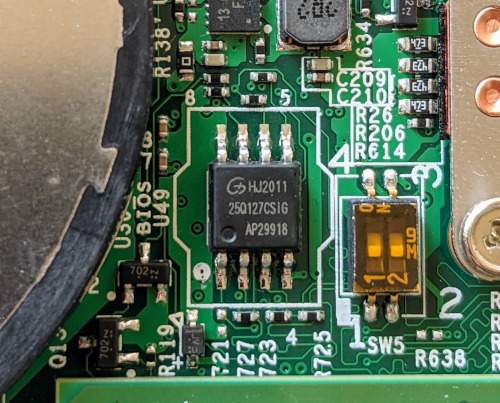
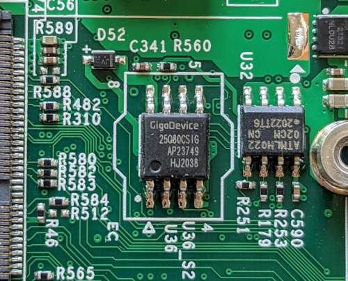

Purism Librem 14
This page describes how to run coreboot on the Purism Librem 14.
CPU |
Intel Core i7-10710U |
PCH |
Comet Lake LP Premium (Comet Lake-U) |
EC |
ITE IT8528E |
Coprocessor |
Intel Management Engine (CSME 14.x) |



Required proprietary blobs
To build a minimal working coreboot image some blobs are required (assuming only the BIOS region is being modified).
Binary file |
Apply |
Required / Optional |
|---|---|---|
FSP-M, FSP-S |
Intel Firmware Support Package |
Required |
microcode |
CPU microcode |
Required |
FSP-M and FSP-S are obtained after splitting the CometLake1 FSP binary
(done automatically by the coreboot build system and included into the
image) from the 3rdparty/fsp submodule.
Microcode updates are automatically included into the coreboot image by the
build system from the 3rdparty/intel-microcode submodule. Official Purism
release images may include newer microcode, which is instead pulled from
Purism’s purism-blobs repository.
A VGA Option ROM is not required to boot, as the Librem 14 uses libgfxinit.
Intel Management Engine
The Librem 14 uses version 14.x of the Intel Management Engine (ME) / Converged Security Engine (CSE). The ME/CSE is disabled using the High Assurance Platform (HAP) bit, which puts the ME into a disabled state after platform bring-up (BUP) and disables all PCI/HECI interfaces. This can be verified checking the coreboot console log, using coreboot’s cbmem utility:
`sudo ./cbmem -1 | grep 'ME:'`
provided coreboot has been patched to output the ME status even when the PCI device is not visible/active (as it is in Purism’s release builds).
Flashing coreboot
Internal programming
The main SPI flash can be accessed using flashrom. No official flashrom release supports the CometLake-U SoC yet, so it must be built from source. Version v1.2-107-gb1f858f or later is needed. Firmware an be easily flashed with internal programmer (either BIOS region or full image).
External programming
The system has an internal flash chip which is a 16 MiB soldered SOIC-8 chip, and has a diode attached to the VCC line for in-system programming. This chip is located on the bottom side of the board, in between the CPU heatsink and the left cooling fan, just above the left SO-DIMM slot.
One has to remove all 9 screws from the bottom cover, then disconnect the battery from the mainboard (bottom left of mainboard). Use a SOIC-8 chip clip to program the chip (a Gigadevice GD25Q127C (3.3V) - datasheet).
The EC firmware is stored on a separate SOIC-8 chip (a Gigadevices GD25Q80C), located underneath the Wi-Fi module, below the left cooling fan.
Known issues
Automatic detection of external audio input/output via the 3.5mm jack does not currently work.
PL1/PL2 limited to 15W/20W by charger and battery discharge capability, not SoC or thermal design.
Working
Internal display with libgfxinit, VGA option ROM, or FSP/GOP init
External displays via HDMI, USB-C Alt-Mode
SeaBIOS (1.14), edk2 (CorebootPayloadPkg), and Heads payloads
Ethernet, m.2 2230 Wi-Fi
System firmware updates via flashrom
M.2 storage (NVMe, SATA III)
Built-in audio (speakers, microphone)
SMBus (reading SPD from DIMMs)
Initialization with FSP 2.0 (CometLake1)
S3 Suspend/Resume
Booting PureOS 10.x, Debian 11.x, Qubes 4.0.4, Windows 10 20H2
Not working / untested
N/A